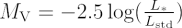

The luminosity of an object is a measure of its intrinsic brightness and is defined as the amount of energy the object emits in a fixed time. It is essentially the power output of the object and, as such, it can be measured in units such as Watts. However, astronomers often prefer to state luminosities by comparing them with the luminosity of the Sun (approximately 3.9 × 1026 Watts). In this way, the luminosity of a star might be expressed as 10 solar luminosities (10 L⊙) rather than 3.9 × 1027 Watts.
Luminosity can be related to the absolute magnitude by the equation:

where L* is the luminosity of the object in question and Lstd is a reference luminosity (often the luminosity of a ‘standard’ star such as Vega).
Luminosity can be quoted for the energy emitted within a finite waveband (e.g. the optical luminosity), or it can be quoted for the energy emitted across the whole electromagnetic spectrum (the ‘bolometric’ luminosity). It should be noted, however, that the measurement of the luminosity of an object requires knowledge of its apparent magnitude and the distance to the object. Estimates of luminosity therefore rely upon accurate distance measurements.
The luminosity of main sequence stars is roughly proportional to their mass to the fourth power, i.e. L ∝ M4.